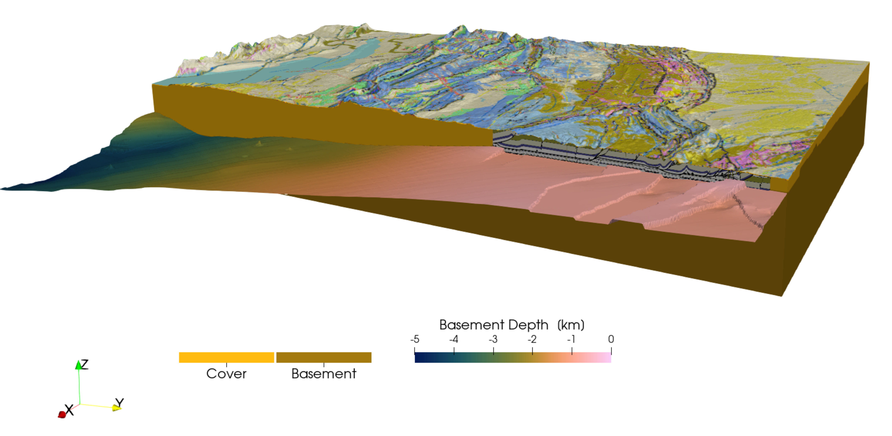

Create a 3D model of the Jura mountains
Aim
In this tutorial, your will learn how to use drape a geological map on top of a digital topography model, import GeoTIFF surfaces and add cross-sections from screenshots to the model setup.
1. Load data
We start with loading the required packages, which includes GMT to download topography (an optional dependency for GeophysicalModelGenerator)
using GeophysicalModelGenerator, GMTDownload the topography with:
Topo = import_topo(lat=[45.5,47.7], lon=[5, 8.1], file="@earth_relief_03s")Next, we drape the geological map on top of the geological map. The geological map was taken from the 2021 PhD thesis of Marc Schori and saved as png map. We downloaded the pdf map, and cropped it to the lower left and upper right corners. The resulting map was uploaded to zenodo; it can be downloaded with
download_data("https://zenodo.org/records/10726801/files/SchoriM_Encl_01_Jura-map_A1.png", "SchoriM_Encl_01_Jura-map_A1.png")We also used a slightly larger version of the map along with the online tool https://apps.automeris.io to extract the location of the corners (using the indicated blue lon/lat values on the map as reference points). This results in:
lowerleft = [4.54602510460251, 45.27456049638056, 0.0]
upperright = [8.948117154811715, 47.781282316442606, 0.0]We can now import the map with the Screensho_To_GeoData function:
Geology = screenshot_to_GeoData("SchoriM_Encl_01_Jura-map_A1.png", lowerleft, upperright, fieldname=:geology_colors) # name should have "colors" in itYou can "drape" this image on the topographic map with
TopoGeology = drape_on_topo(Topo, Geology)GeoData
size : (3721, 2641, 1)
lon ϵ [ 5.0 : 8.1]
lat ϵ [ 45.5 : 47.7]
depth ϵ [ 0.157 : 4.783]
fields : (:Topography, :geology_colors)In the same PhD thesis, Schori also reconstructed the depth of various layers within the Jura. The data of his thesis are uploaded to https://doi.org/10.5281/zenodo.5801197. Here, we use the basement topography as an example (/03_BMes_top-basement/BMes_Spline.tif), which is in the GeoTIFF format that contains coordinates. Unfortunately, there are a lot of coordinate systems and in the thesis of Schori, a mixture of longitude/latitude (longlat) and a Swiss reference system is used. Within GeophysicalModelGenerator, we need a longlat coordinate system. It is quite easy to convert one to the other with the open-source QGIS package. We did this and saved the resulting image in Zenodo:
download_data("https://zenodo.org/records/10726801/files/BMes_Spline_longlat.tif", "BMes_Spline_longlat.tif")Now, import the GeoTIFF as:
Basement = import_GeoTIFF("BMes_Spline_longlat.tif", fieldname=:Basement, removeNaN_z=true)the removeNaN_z option removes NaN values from the dataset and instead uses the z-value of the nearest point. That is important if you want to use this surface to generate a 3D model setup (using below_surface, for example).
The thesis also provides a few interpreted vertical cross-sections. As before, we import them as a screenshot and estimate the lower-left and upper right corners. In this particular case, we are lucky that the lon/lat values are indicated on the cross-section. Often that is not the case and you have to use the mapview along with the digitizer tool described above to estimate this.
As example, we use the cross-section
download_data("https://zenodo.org/records/10726801/files/Schori_2020_Ornans-Miserey-v2_whiteBG.png", "Schori_2020_Ornans-Miserey-v2_whiteBG.png")
Corner_LowerLeft = (5.92507, 47.31300, -2.0)
Corner_UpperRight = (6.25845, 46.99550, 2.0)
CrossSection_1 = screenshot_to_GeoData("Schori_2020_Ornans-Miserey-v2_whiteBG.png", Corner_LowerLeft, Corner_UpperRight) # name should have "colors" in itNote that we slightly modified the image to save it with a white instead of a transparent background
2. Project the data to a Cartesian grid
At this stage, we have all data in geographic coordinates. In most cases it is more useful to have them in Cartesian coordinates. Moreover, the resolution of the grids is different. Whereas the TopoGeology has a size of (3721, 2641, 1), Basement has size (2020, 1751, 1). It is often useful to have them on exactly the same size grid
We can do this in two steps: First, we define a ProjectionPoint along which we perform the projection
proj = ProjectionPoint(Lon=6, Lat=46.5)We can simply transfer the TopoGeology map to Cartesian values with:
convert2CartData(Topo,proj)CartData
size : (3721, 2641, 1)
x ϵ [ -82.31272066158422 : 162.66627630405523]
y ϵ [ -115.08628070208057 : 136.73428093825373]
z ϵ [ 0.157 : 4.783]
fields : (:Topography,)The problem is that the result is not strictly orthogonal, but instead slightly curved. That causes issues later on when we want to intersect the surface with a 3D box. It is therefore better to use the project_CartData to project the GeoData structure to a CartData struct. Let's first create this structure by using x,y coordinates that are slightly within the ranges given above:
TopoGeology_cart = CartData(xyz_grid(range(-70,150,length=3500), range(-105,130,length=2500), 0.0))CartData
size : (3500, 2500, 1)
x ϵ [ -75.0 : 160.0]
y ϵ [ -110.0 : 135.0]
z ϵ [ 0.0 : 0.0]
fields : (:Z,)Next, we project the data with:
TopoGeology_cart = project_CartData(TopoGeology_cart, TopoGeology, proj)CartData
size : (3500, 2500, 1)
x ϵ [ -80.0 : 160.0]
y ϵ [ -110.0 : 135.0]
z ϵ [ 0.16119615440200846 : 4.776083480822139]
fields : (:Topography, :geology_colors)And we can do the same with the basement topography
Basement_cart = project_CartData(TopoGeology_cart, Basement, proj)CartData
size : (3500, 2500, 1)
x ϵ [ -80.0 : 160.0]
y ϵ [ -110.0 : 135.0]
z ϵ [ -6.049924561684904 : 0.8030737304687502]
fields : (:Basement,)Finally, we can also transfer the cross-section to Cartesian coordinates. As this is just for visualization, we will use convert2CartData in this case
CrossSection_1_cart = convert2CartData(CrossSection_1,proj)for visualization, it is nice if we can remove the part of the cross-section that is above the topography. We can do that with the below_surface routine which returns a Boolean to indicate whether points are below or above the surface
below = below_surface(CrossSection_1_cart, TopoGeology_cart)We can add that to the cross-section with:
CrossSection_1_cart = addfield(CrossSection_1_cart,"rocks",Int64.(below))Note that we transfer the boolean to an integer
Let's have a look at this in Paraview:
write_paraview(Basement_cart,"Basement_cart")
write_paraview(TopoGeology_cart,"TopoGeology_cart")
write_paraview(CrossSection_1_cart,"CrossSection_1_cart")The result looks like: 
3. Geological block model
Yet, if you want to perform a numerical simulation of the Jura, it is more convenient to rotate the maps such that we can perform a simulation perpendicular to the strike of the mountain belt. This can be done with rotate_translate_scale:
RotationAngle = -43
TopoGeology_cart_rot = rotate_translate_scale(TopoGeology_cart, Rotate=RotationAngle)
Basement_cart_rot = rotate_translate_scale(Basement_cart, Rotate=RotationAngle)
CrossSection_1_cart_rot = rotate_translate_scale(CrossSection_1_cart, Rotate=RotationAngle)Next, we can create a new computational grid that is more conveniently oriented: We create both a surface and a 3D block
nx, ny, nz = 1024, 1024, 128
x,y,z = range(-100,180,nx), range(-50,70,ny), range(-8,4,nz)
ComputationalSurf = CartData(xyz_grid(x,y,0))
ComputationalGrid = CartData(xyz_grid(x,y,z))Re-interpolate the rotated to the new grid:
GeologyTopo_comp_surf = interpolate_datafields_2D(TopoGeology_cart_rot, ComputationalSurf, Rotate=RotationAngle)
Basement_comp_surf = interpolate_datafields_2D(Basement_cart_rot, ComputationalSurf, Rotate=RotationAngle)Next we can use the surfaces to create a 3D block model. We start with a block model that has the different rocktypes:
Phases = zeros(Int8,size(ComputationalGrid.x)) #Define rock typesSet everything below the topography to 1
id = below_surface(ComputationalGrid, GeologyTopo_comp_surf)
Phases[id] .= 1The basement is set to 2
id = below_surface(ComputationalGrid, Basement_comp_surf)
Phases[id] .= 2Add to the computational grid:
ComputationalGrid = addfield(ComputationalGrid,"Phases", Phases)
ComputationalGrid = removefield(ComputationalGrid,"Z")Save the surfaces, cross-section and the grid:
write_paraview(GeologyTopo_comp_surf,"GeologyTopo_comp_surf")
write_paraview(Basement_comp_surf, "Basement_comp_surf")
write_paraview(CrossSection_1_cart_rot,"CrossSection_1_cart_rot")
write_paraview(ComputationalGrid,"ComputationalGrid")We can visualize this in paraview: 
We use a vertical exaggeration of factor two. Also note that the y-direction is now perpendicular to the Jura mountains. The paraview statefiles to generate this figure is /tutorials/Jura_2.pvsm.
This page was generated using Literate.jl.